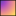

<!doctype html>
<html lang="en">
    <head>
        <meta charset="utf-8">
        <meta http-equiv="X-UA-Compatible" content="IE=edge">
        <meta name="viewport" content="initial-scale=1,user-scalable=no,maximum-scale=1,width=device-width">
        <meta name="mobile-web-app-capable" content="yes">
        <meta name="apple-mobile-web-app-capable" content="yes">
        <link rel="stylesheet" href="css/leaflet.css"><link rel="stylesheet" href="css/L.Control.Locate.min.css">
        <link rel="stylesheet" href="css/qgis2web.css"><link rel="stylesheet" href="css/fontawesome-all.min.css">
        <link rel="stylesheet" href="css/leaflet-control-geocoder.Geocoder.css">
        <link rel="stylesheet" href="css/leaflet-measure.css">
        <style>
        #map {
            width: 1292px;
            height: 844px;
        }
        </style>
        <title></title>
    </head>
    <body>
        <div id="map">
        </div>
        <script src="js/qgis2web_expressions.js"></script>
        <script src="js/leaflet.js"></script><script src="js/L.Control.Locate.min.js"></script>
        <script src="js/multi-style-layer.js"></script>
        <script src="js/leaflet.rotatedMarker.js"></script>
        <script src="js/leaflet.pattern.js"></script>
        <script src="js/leaflet-hash.js"></script>
        <script src="js/Autolinker.min.js"></script>
        <script src="js/rbush.min.js"></script>
        <script src="js/labelgun.min.js"></script>
        <script src="js/labels.js"></script>
        <script src="js/leaflet-control-geocoder.Geocoder.js"></script>
        <script src="js/leaflet-measure.js"></script>
        <script src="data/LiveCoverage_1.js"></script>
        <script src="data/PlannedCoverage_2.js"></script>
        <script src="data/FiberRoutesDemo_3.js"></script>
        <script>
        var map = L.map('map', {
            zoomControl:true, maxZoom:28, minZoom:1
        }).fitBounds([[-26.320778853657444,27.685170061871077],[-25.840552678668537,28.504320919534997]]);
        var hash = new L.Hash(map);
        map.attributionControl.setPrefix('<a href="https://github.com/tomchadwin/qgis2web" target="_blank">qgis2web</a> &middot; <a href="https://leafletjs.com" title="A JS library for interactive maps">Leaflet</a> &middot; <a href="https://qgis.org">QGIS</a>');
        var autolinker = new Autolinker({truncate: {length: 30, location: 'smart'}});
        L.control.locate({locateOptions: {maxZoom: 19}}).addTo(map);
        var measureControl = new L.Control.Measure({
            position: 'topleft',
            primaryLengthUnit: 'meters',
            secondaryLengthUnit: 'kilometers',
            primaryAreaUnit: 'sqmeters',
            secondaryAreaUnit: 'hectares'
        });
        measureControl.addTo(map);
        document.getElementsByClassName('leaflet-control-measure-toggle')[0]
        .innerHTML = '';
        document.getElementsByClassName('leaflet-control-measure-toggle')[0]
        .className += ' fas fa-ruler';
        var bounds_group = new L.featureGroup([]);
        function setBounds() {
        }
        map.createPane('pane_OpenStreetMap_0');
        map.getPane('pane_OpenStreetMap_0').style.zIndex = 400;
        var layer_OpenStreetMap_0 = L.tileLayer('https://tile.openstreetmap.org/{z}/{x}/{y}.png', {
            pane: 'pane_OpenStreetMap_0',
            opacity: 1.0,
            attribution: '',
            minZoom: 1,
            maxZoom: 28,
            minNativeZoom: 0,
            maxNativeZoom: 19
        });
        layer_OpenStreetMap_0;
        map.addLayer(layer_OpenStreetMap_0);
        function pop_LiveCoverage_1(feature, layer) {
        }

        function style_LiveCoverage_1_0() {
            return {
                pane: 'pane_LiveCoverage_1',
                interactive: false,
            }
        }
        function style_LiveCoverage_1_1() {
            return {
                pane: 'pane_LiveCoverage_1',
                opacity: 1,
                color: 'rgba(38,89,128,1.0)',
                dashArray: '',
                lineCap: 'butt',
                lineJoin: 'miter',
                weight: 1.0, 
                fillOpacity: 0,
                interactive: false,
            }
        }
        map.createPane('pane_LiveCoverage_1');
        map.getPane('pane_LiveCoverage_1').style.zIndex = 401;
        map.getPane('pane_LiveCoverage_1').style['mix-blend-mode'] = 'normal';
        var layer_LiveCoverage_1 = new L.geoJson.multiStyle(json_LiveCoverage_1, {
            attribution: '',
            interactive: false,
            dataVar: 'json_LiveCoverage_1',
            layerName: 'layer_LiveCoverage_1',
            pane: 'pane_LiveCoverage_1',
            onEachFeature: pop_LiveCoverage_1,
            styles: [style_LiveCoverage_1_0,style_LiveCoverage_1_1,]
        });
        bounds_group.addLayer(layer_LiveCoverage_1);
        map.addLayer(layer_LiveCoverage_1);
        function pop_PlannedCoverage_2(feature, layer) {
        }

        function style_PlannedCoverage_2_0() {
            return {
                pane: 'pane_PlannedCoverage_2',
                interactive: false,
            }
        }
        function style_PlannedCoverage_2_1() {
            return {
                pane: 'pane_PlannedCoverage_2',
                opacity: 1,
                color: 'rgba(0,0,0,1.0)',
                dashArray: '',
                lineCap: 'butt',
                lineJoin: 'miter',
                weight: 1.0, 
                fillOpacity: 0,
                interactive: false,
            }
        }
        map.createPane('pane_PlannedCoverage_2');
        map.getPane('pane_PlannedCoverage_2').style.zIndex = 402;
        map.getPane('pane_PlannedCoverage_2').style['mix-blend-mode'] = 'normal';
        var layer_PlannedCoverage_2 = new L.geoJson.multiStyle(json_PlannedCoverage_2, {
            attribution: '',
            interactive: false,
            dataVar: 'json_PlannedCoverage_2',
            layerName: 'layer_PlannedCoverage_2',
            pane: 'pane_PlannedCoverage_2',
            onEachFeature: pop_PlannedCoverage_2,
            styles: [style_PlannedCoverage_2_0,style_PlannedCoverage_2_1,]
        });
        bounds_group.addLayer(layer_PlannedCoverage_2);
        map.addLayer(layer_PlannedCoverage_2);
        function pop_FiberRoutesDemo_3(feature, layer) {
        }

        function style_FiberRoutesDemo_3_0() {
            return {
                pane: 'pane_FiberRoutesDemo_3',
                opacity: 1,
                color: 'rgba(229,16,84,1.0)',
                dashArray: '',
                lineCap: 'square',
                lineJoin: 'bevel',
                weight: 3.0,
                fillOpacity: 0,
                interactive: false,
            }
        }
        map.createPane('pane_FiberRoutesDemo_3');
        map.getPane('pane_FiberRoutesDemo_3').style.zIndex = 403;
        map.getPane('pane_FiberRoutesDemo_3').style['mix-blend-mode'] = 'normal';
        var layer_FiberRoutesDemo_3 = new L.geoJson(json_FiberRoutesDemo_3, {
            attribution: '',
            interactive: false,
            dataVar: 'json_FiberRoutesDemo_3',
            layerName: 'layer_FiberRoutesDemo_3',
            pane: 'pane_FiberRoutesDemo_3',
            onEachFeature: pop_FiberRoutesDemo_3,
            style: style_FiberRoutesDemo_3_0,
        });
        bounds_group.addLayer(layer_FiberRoutesDemo_3);
        map.addLayer(layer_FiberRoutesDemo_3);
        var osmGeocoder = new L.Control.Geocoder({
            collapsed: true,
            position: 'topleft',
            text: 'Search',
            title: 'Testing'
        }).addTo(map);
        document.getElementsByClassName('leaflet-control-geocoder-icon')[0]
        .className += ' fa fa-search';
        document.getElementsByClassName('leaflet-control-geocoder-icon')[0]
        .title += 'Search for a place';
        var baseMaps = {};
        L.control.layers(baseMaps,{' Fiber Routes - Demo': layer_FiberRoutesDemo_3,' Planned Coverage': layer_PlannedCoverage_2,' Live Coverage': layer_LiveCoverage_1,"OpenStreetMap": layer_OpenStreetMap_0,},{collapsed:false}).addTo(map);
        setBounds();
        </script>
    </body>
</html>
